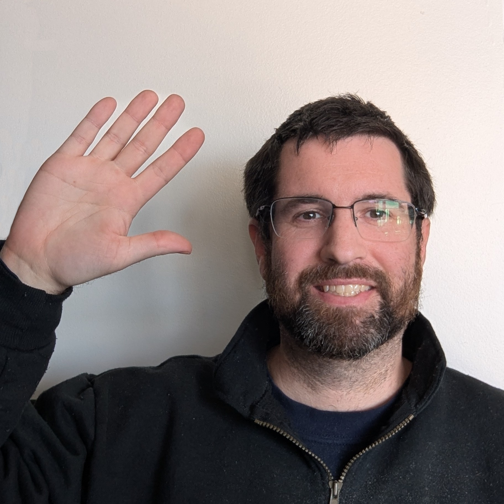

Home
About
Services
Contact
Hello!
My name is David Honig and I'm a Data Analyst

That guy to the left is me waving
I've worked in Northern Virginia for non-profit and for-profit companies for many years in the pharmacy and education industries.
I hope my experience will demonstrate how I can be a valuable asset to your organization.